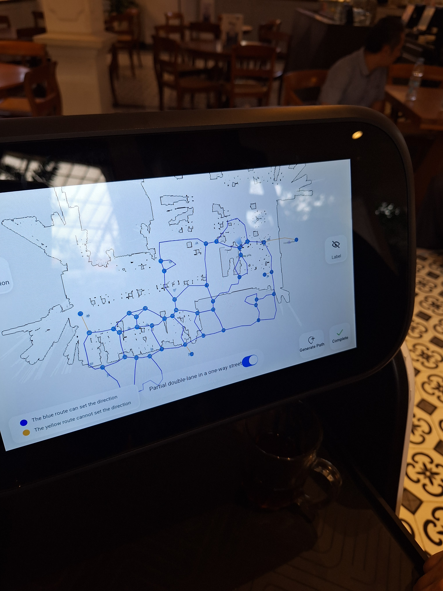

Overview
Conducted the training, deployment, and operational implementation of three restaurant service robots at Omah Mode Bandung. The robots were configured to support food delivery by transporting meals from the outlet or serving area to customer tables.
Challenge
- Deliver consistent food service quality during busy restaurant hours.
- Configure safe and reliable routes through the restaurant.
- Map table locations and adapt the workflow for robot operations.
- Train staff on robot use, troubleshooting, and safety procedures.
- Ensure robots could work alongside restaurant staff without disruption.
Solution
Performed on-site installation, area mapping, route setup, table location configuration, and operational testing. Conducted training sessions for restaurant staff covering robot operation, task assignment, basic troubleshooting, safety procedures, and daily operational handling.
The three robots were integrated into the restaurant service workflow to autonomously deliver food from the outlet to designated customer tables while working alongside staff.
Mapping Display
The image below shows a robot area mapping display used during deployment. It illustrates how the robot maps dining areas and table locations to navigate safely and efficiently.

Robot mapping display used during installation to create accurate navigation zones.
Result
- Successfully deployed and operationalized three service robots at Omah Mode Bandung.
- Robots autonomously delivered food according to configured routes and table destinations.
- Restaurant staff learned robot operation and daily handling procedures.
- The solution demonstrated how AMRs can enhance hospitality service efficiency.
Conclusion
This project provided practical experience in service robot deployment, autonomous navigation configuration, operational workflow integration, and user training. It expanded experience beyond industrial automation into commercial service robotics, showing how autonomous mobile robots can support operational efficiency and customer service in hospitality.